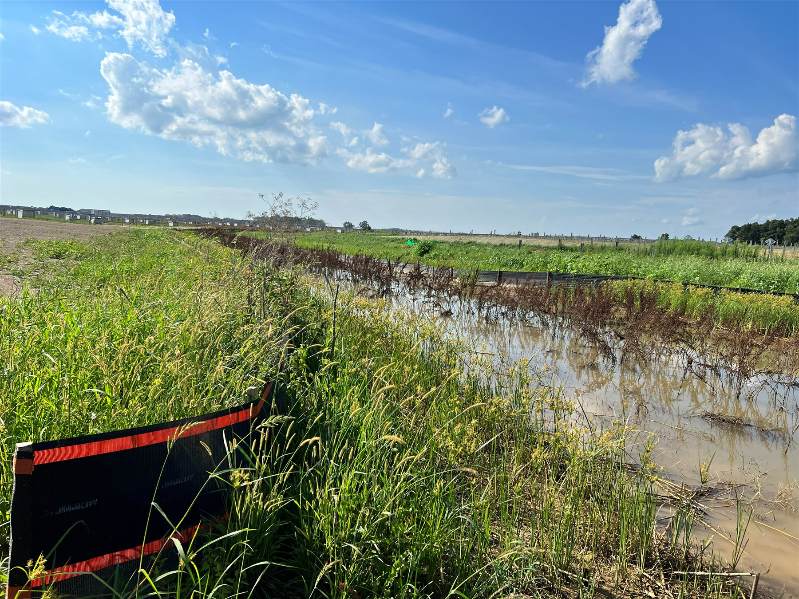
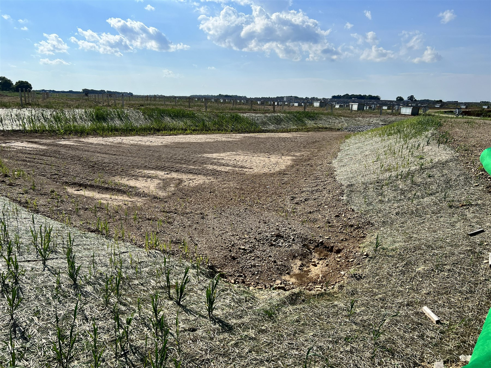
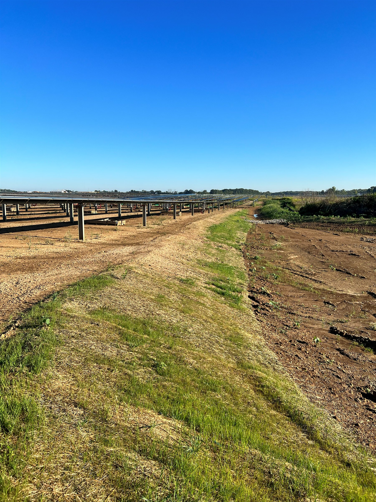

Utility-Scale Solar Site — Erosion & Sediment Control Program
The construction team had over-cleared vegetation across large areas of an active utility-scale solar build, creating a major sediment discharge issue and active regulatory exposure across hundreds of acres of exposed ground.
Serving as district environmental manager, designed and led execution of a remediation and BMP program with the field team — retention ponds, rigid sediment controls, wetlands protection, and large-scale hydroseeding and straw stabilization across several hundred acres.
Sediment discharge issue resolved. Site brought back into compliance and held there through completion. Stabilization established and verified before final cover, with documentation supporting permit close-out.
Utility-Scale Construction
SWPPP Program Management
Retention Pond Construction
Hydroseeding
Wetlands Protection
Erosion Control Blankets
Straw Wattle
Regulatory Compliance Recovery